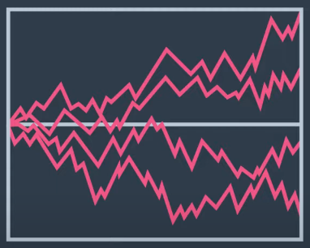

The result is that it doesn't need to add up previous measurements to know which way is down; it can just look at the gravity vector at any given moment. Because it doesn't rely on past data to determine current tilt, the error doesn't accumulate.
Accelerometers are however jittery. They are very sensitive to vibrations and sudden movements, which makes them unreliable for tracking fast, smooth motion on their own.An IMU uses a gyroscope for immediate, smooth movements and uses an accelerometer to slowly nudge the gyro back to reality whenever it starts to drift away from the gravity vector.